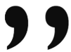

mídia impressa tradicional, tais como livros e revistas, as imagens, gráficos, ou fragmentos de código devem
vir acompanhados de uma legenda. Até recentemente não existia uma maneira semântica de marcar, no HTML, o conteúdo
de uma legenda, e tínhamos que nos valer de nomes de classes e CSS. A HTML5 espera resolver este problema criando
dois elementos denominados
"figure" e "figcaption".
Fig 1: A really juicy orange.